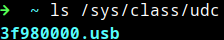
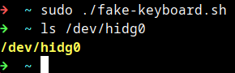

There's a way to do it better -
find it.
- Thomas A. Edison

15 years later...
I'm still trying to beat the game ^_^"

I’ve revisited this idea multiple times (ずっとずっと) since my university hackathons, where I initially relied on basic OpenCV techniques like color masking. Those approaches felt limited, so I rebuilt the system using the Sony IMX500, running a custom fine-tuned YOLO11 model directly on the sensor. The system operates on metadata only, sending results to a Raspberry Pi (I'll refer to it as RPi from now on) Zero 2 W to drive real-time control via USB HID, forming a low-latency vision → action loop without transferring image data.
There are various model to choose from. I chose YOLO11 mainly because it has a much more stable and standard way of fine tuning models for the IMX500 sensor specifically. I have also tested various other models as seen in my GitHub repo, but they have less accuracy scores when compared to yolo11.
The main outcome of this project is to use a Raspberry Pi and a DSP enabled Camera to play the video game → Road Fighter.
Table of contents →
- Custom Dataset and Labeling
- Fine-Tuning on custom dataset
- Exporting model to IMX500
- Testing model on RPi Zero 2 W
- Applying Logic to make the agent smarter
- Finishing the loop: Button Input
Custom Dataset and Labeling
The following tools were used to generate and label the dataset.
- FCEUX → running the game on PC
- OBS Studio → recording the game video
- ffmpeg → splitting the video into individual image samples
- roboflow → labeling the images

I knew the "170" was a bad idea...
but I didn't feel like labeling anymore
Fine-Tuning on custom dataset
- I selected a 70:20:10 split as shown in the image below ⇣

- This split is required as it is a good balance to make sure the model is tested on all classes of data and doesn't miss anything or trains on less data.
- Using the yolo command line tool, I trained the model on these parameters.
yolo detect train model=yolo11n.pt data=data.yaml epochs=60 imgsz=416 amp=False batch=8 - As seen here, the precision in the first few epochs are not very good, but improving in the right direction. Main improvement is in Recall due to zero post-processing filters and simple sprites in the game. There was one major spike in the mAP50 in the 4th epoch but the model clearly got overconfident there and reverted back to 0.2s. There is very little improvement in Precision and a major dip in Precision from 0.698 to 0.0661 but we will see better results much further.

- At epoch 36, the model finally scored above 0.85 mAP50. The Recall is also pretty good at around the ~0.85 range. We can see the model has essentially finished learning and reached saturation. The epochs after this give minimal improvement if any.

- Since the training was happening so quickly on my GPU, I decided to let it run and watch how it performs by the end of 60 epochs. It reached the ~0.9 mAP50 scores with ~0.9 Recall which is pretty good. It also produced a good mAP50-95 score of ~0.74 by the last epoch which is really good for my use case as the game in question uses simple sprites and the YOLO model's capture rate being 16 frames per second, the model would recognize objects at least once in 2 or 3 frames in the worst case scenario.

- I initially thought class imbalance would be a problem as there are
Lane-Markingsin every single image of the dataset, that is why some classes likeObstacle(0.497),Fuel(0.663) andEnemy-Blue-Bad(0.753) have relatively bad mAP50 scores. But the model works fine overall.
A better solution instead of depending on the "it might get detected at least once in 2 frames" hope, I could add more images of the classes that have very less labels to balance the dataset and train the model again. That will defnitely get the model to near perfect results, given the simiplicity of the classes.
I do not trust the results yet.
Oh wait, we still need to export the model?
(¬_¬") How boring...
Exporting model to IMX500
- I have trained the model on my custom dataset. Now, all that remains is to make it usable in the IMX500 camera. The official ultralytics documentation shows us how to convert the now fine-tuned model to the IMX500 format.
yolo export model=/home/bhu1/dev/git/RasPi_YOLO/runs/detect/train2/weights/best.pt format=imx data=data.yaml
As seen in the code, thebest.ptweights are used again. But, this time, they are used to export the model and the format used isformat=imx.
- I just transfered the file to the RPi and this part was done. The 3 most widely used image resolutions are:
320x320,416x416and640x640. 640x640is an excellent choice if we need accuracy, but for this project, I need to focus on latency as well. Larger tensor image means more inference time, I might lose lots of milliseconds just to identify a simple sprite on a computer screen.- In that case
320x320must be the best choice, but it's a tradeoff for model quality and results and since my dataset was already imbalanced, I decided to go with the middleground →416x416. - Once the model exported, I navigated to the output directory to find the
packerOut.zip.
Testing model on RPi Zero 2 W
- I moved the packer.out file the RPi. In my case, I hosted a quick web server using
python -m http.serverand downloaded it on my raspberry pi. - Folder structure on RPi
yolo11n_imx_model
├──dnnParams.xml
├──labels.txt→ Has to be manually created (example)
├──packerOut.zip→ Has to be placed in the right directory
├──model_imx.on
├──model_imx_MemoryReport.json
└──model_imx.pbtxt - After the basic setup was done, I headed back to the official ultralytics documentation to get the code to run the model on the RPi and ran it on my RPi immediately. That's when I noticed this...

Large difference between libcamera request rate (33.4 RPS) and detection rate (5.3 DPS).
The code itself ran, the model could draw bounding boxes and everything, but it was horribly slow. I Then tried to use a lower FPS rate, but that wouldn't work either. Since I was using VNC, I had a hard time understanding that the problem was in the RPi itself.- The RPi I was using was a Zero 2 W, which has 512 mb ram and a quad core Arm Cortex A53 and that was the reason YOLO was struggling.
- One might ask, "If the processing is happening in the camera, why does the RPi limit YOLO here?"
The answer is a bit... weird... and funny... - The RPi is not running the YOLO model, the RPi is struggling to display the camera view and show the bounding boxes at the same time.
おかしいな。。。
あー、もう！
わからないよ
- Therefore, I kept running it at
1 FPS targetknowing I could use a more powerful RPi later when I buy one and since 1 FPS performs well without crashing the RPi.
- It wasn't perfect. Honestly, it was bad... But it worked... The model was able to identify something at the very least
- But across the whole internet I was not able to find any information on how to stream metadata-only. That's when I thought of checking the picamera2 github repository but I couldn't find anything there.
Oh?
"headless"?
FOUND IT!!
- I then ran the help command for
AiCamerafrom themodlibmodule:python -c "from modlib.devices import AiCamera; help(AiCamera)".
- headless is the component I was finding all this time. After adding the
headless=Trueand modifying the code a little, I was able to see the detections in the terminal. The official ultralytics documentation shows that the max achievable framerate is16, so I hardcoded 16 and modified the code to measure latency and found this.
- Latency: 62ms. But in the official ultralytics documentation showed that the optimal inference time = 58.85 ms. Therefore I removed the hardcoded 16 fps limit and these were my findings.

- To my surprise, the end-to-end latency = 35ms on average. Yes, this is the round trip latency.
It includes ⇣- ├── YOLO Inference → Camera runs YOLO on the DSP and identifies the objects
- ├── Camera sends the information to the Pi
- ├── RPi does post processing on the data → This is where the logic lives
- └── RPi prints it to the terminal
- I was able to achieve such a good end-to-end latency: 35ms thanks to
the sacrifice made earlier → 416x416 tensor size. - Code can be checked here.
Applying Logic to make the agent smart
- From the metadata, I found out the positions of the player, enemies, obstacles, lane markings, etc and designed a basic algorithm where the model suggests directions to move as depicted in the image below. It may not be the most advanced system but it is pretty good for a use case like this.

- I have factored in a few rules that must be there no matter how much development this project gets:
- Player car is red. One of the enemy cars is red as well, and the model might think the enemy car is the player car or vice versa. So I made this rule such that:
if red_car[y_pos] > 0.75: player_car[pos]=red_car[pos]which means if the car is in the bottom quarter, consider that as player car. - Since no model can be 100% perfect, especially a low end edge model meant for speed tasks rather than accuracy tasks I decided to average the positions to reduce jitter. This way, the movement of the position of any element will be smooth rather than jumping around from corner to corner.
- Must make the system check the jitter of movement, if it is over a certain limit, compared to previous samples, ignore the current sample completely.
- Combine all enemy classes into 1 common group called enemies to reduce complexity for now. Each type of enemy has their own capability, but the current task must be to stabilize the movement.
Finishing the loop: Button Input
There are 2 methods to do this. But I will only be following one of the methods:- 2x Servo Motors: using servo motors to press the physical keys on a keyboard or a controller.
- USB Gadget Mode: using RPi with USB Gadget Mode where it can pretend to be a USB HID device and send inputs directly via usb cable.
sudo nvim /boot/firmware/config.txtunder[all]i addeddtoverlay=dwc2sudo nvim /boot/firmware/cmdline.txtaddedmodules-load=dwc2

Now that I have a USB controller, the RPi can pretend to be a keyboard or controller.I added libcompossite to the modules using:
echo libcomposite | sudo tee -a /etc/modules.I also wrote a script to initialize the usb gadget.

I have designed this module called fake_keyboard.py which is basically a dictionary of all keyboard keys and has functions to do things like this ⇣Is it over?
No more
"TO BE CONTINUED..."?
hack.py script on my RPi via SSH.Then, I wrote some logic for the program to make the RPi use the YOLO bounding boxes to move the player.
As previously mentioned, I set a few rules in logic.py⇣ (in no particular order)
- Always hit the Gas
- Release the Gas Pedal when
player[width] > player[height]- meaning, player has hit an enemy or obstacle and is spinning out. - If the bounding boxes of player ever overlaps with an enemy -
Release the Gas Pedal - Priority to
stay in the centerof the road using the 2 nearest lane_markings to the player and they are averaged. - Player car width is found using YOLO, to find road width, we simply
road_width = player_width * 6. This avoids crashing on the side of the road. Found through screenshot + paint program pixel analysis. - Path finding (left/right) is done based on a
score. Ignores gaps smaller thanplayer_widthand usesscore = DistanceToGap - (GapWidth*0.1). Huge gap -> Higher score. Small gap -> Lesser score. Algorithm prefers larger score. - If there is an enemy car in front of the player,
steer left or rightbased on which side thegapis. - Track enemies every frame and store positions to
find velocityof next 2 frames andpredictwhere the enemy will be by the next few frames to dodge an incoming enemy car. Velocity is ignored ifVx < (player_width * 0.15). This is just a relaxant for jitter. - If there are too many enemies on the screen, Gas Pedal is released, so that enemies go
out of frame and despawn - There is a line of sight straight ahead of the player, where if any enemy appears, action from the above algorithms is taken. The line of sight is from the top of the screen until
player_pos + player_height * 1.05. The 1.05 product is just to make it jitter proof a bit.
Thank You
Since we have come so far....here is a demo of the
Autonomous Game Player